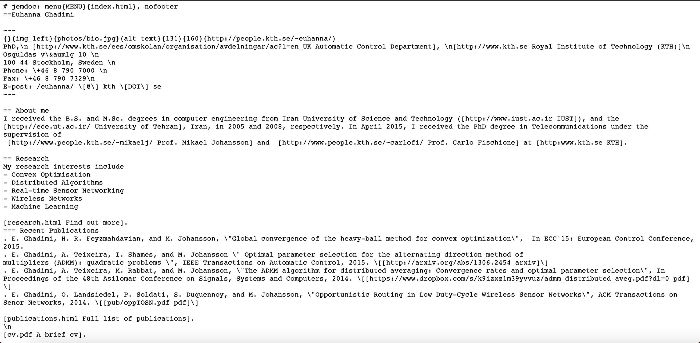
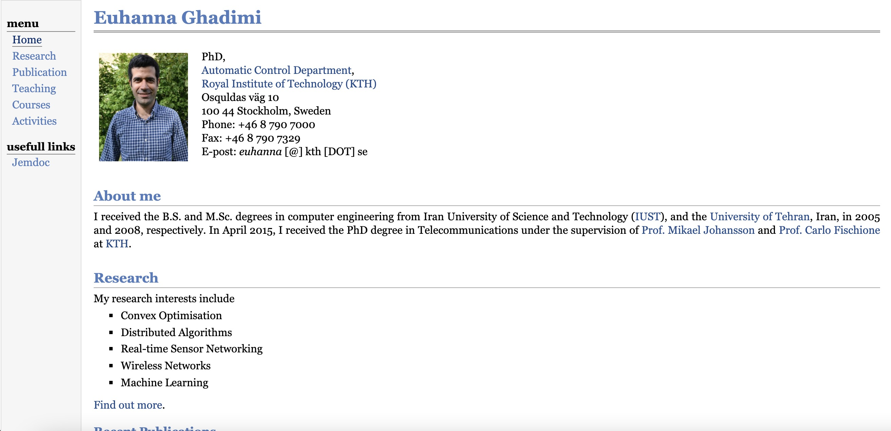

利用Jemdoc+Github.io+Mac搭建个人主页
一直想做一个学术主页(最后做成了个人博客hhhh)，试过一些Github的模版，也在网上看了各种各样的方法，但总觉得不够简洁，而且也很难编辑。直到遇到Jemdoc，觉得这才是最适合我自己的方法。于是把这个方法尽可能详细的分享在这里，特别适合我这样的web小白，有需要的朋友也可以尝试着做一下。如果有错误和需补充的地方，欢迎讨论。
做出来的大概是这个样子
 |
主要分为两个步骤
1.利用Jemdoc创建自己的html主页文件，
2.将html文件和xxx.github.io绑定。
这样就可以通过访问xxx.github.io访问你的主页。
具体步骤
首先打开Jemdoc官网，左上角download部分，将jemdoc.py和example css file文件保存下来，并放在同一个文件夹中。
新建一个文本文件并放入刚刚新建文件夹中，命名为index，后缀改为jemdoc，即index.jemdoc，此文件之后会用来生成你的html主页文件。（命名可根据自己喜好）
下方是别人主页的一个demo（正好是我们学校的一个老师hhhh），可以将其复制到你刚创建好的index.jemdoc中，然后根据他的框架进行删改内容。
|  |
再创建一个名为MENU的文件，并放入同一文件夹，这样之后生成的html页面左侧会多出一列菜单。
|  |
在终端进入你刚刚新建的文件夹，并输入python2 jemdoc.py index.jemdoc
在执行过后，会生成一个html文件，点开就可以看到个人主页的内容了。
Tips:
1.这里我是用vscode编辑.jemdoc文件，有更好的工具欢迎交流。
2.网上看到别人说这个MENU是可选项，但我好像没有这个文件无法编译，如果不需要菜单可以把MENU里面的内容删掉。
3.注意这里MENU文件没有后缀名。
4.除非你安装的python版本是python2的，否则命令必须用python2，而不能用python。即不可以在命令行输入python jemdoc.xxxxxxxxxxx。
现在进行步骤2，将html和xxx.github.io绑定。
在Github中新建一个repository，命名为xxx.github.io，xxx为你的github用户名，然后将仓库克隆到本地，再把刚刚新建的文件夹里面的文件全部放进去，最后上传到远程仓库即可，git教程可参考这里。（我就是用的这个教程hhhh，老师讲的太细了）
每次在本地修改自己的jemdoc文件里面的内容，然后再用python编译之后，即可通过以下方式更新到github，即更新到最新主页网址里：
在终端中打开本地仓库，输入下列命令，输入一行执行一行
git add *
git commit -m 'xxx（本次更新内容）’
git push
稍过几分钟，你点开https:xxx.github.io即可看到你自己的学术主页了。
需要注意的是，在初次安装好git后，建议修改用户信息，这样通过git更新信息后每次在github中显示的贡献者会是自己的账号。
git config –global user.name “xxx”
git config –global user.email xxx@xxx.com
题外话：index.jemdoc修改指南
官方的Guide里，主要看左侧example page, chear sheet, extra syntax这三个部分。
几个常用的cheatsheet：
= xxx 标题
～ 手动空格，可用于对齐
xxx 粗体
[https:www.xxx.com yyy] 超链接，前者是网址，然后空一格，yyy是超链接名称
. 自动标号，譬如，第一行是“. abcdefg”，然后另起一行“. ABCDEFG”，这两行开头会自动标号
换行
插入图片时，demo如下
{}{img_left}{bio.jpg}{alt text}{131px}{160px}{http:people.kth.se euhanna}
将bio.jpg放入相同文件夹内即可，最后一个网址是点击图片的网址导航，可以为空。
点击MENU里其他菜单时，比如有一个子菜单Research，Reseach对应的research.html文件，其创建方法和index.html一样，先创建research.jemdoc，然后生成对应的html即可。注意，一定要在同一个文件夹内。
以上就是利用Jemdoc+Github在mac端搭建个人主页的方法，在windows环境下，操作步骤也是大致相似的。希望以上内容能够对想搭建学术主页却无从下手的同学有所帮助。